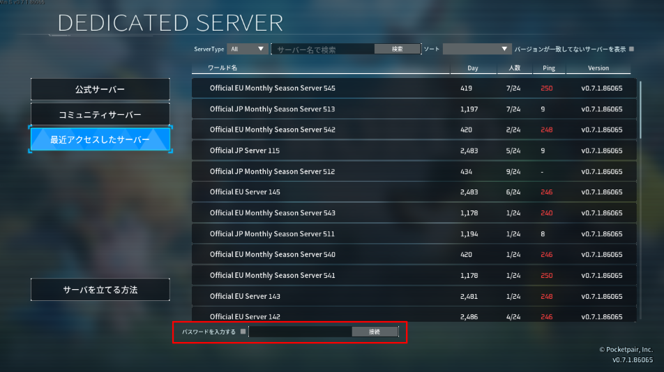
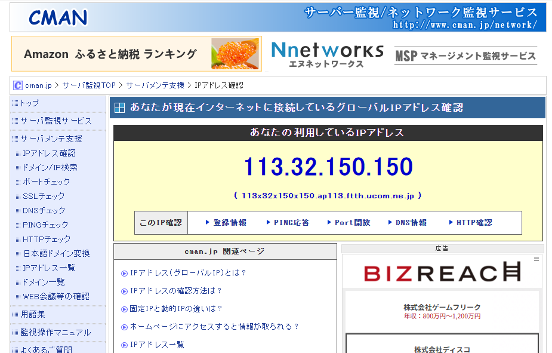
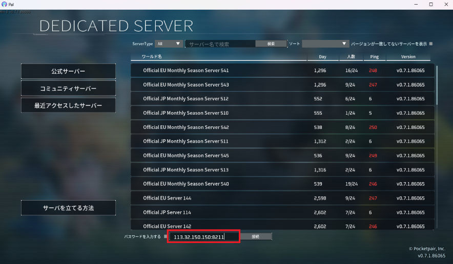
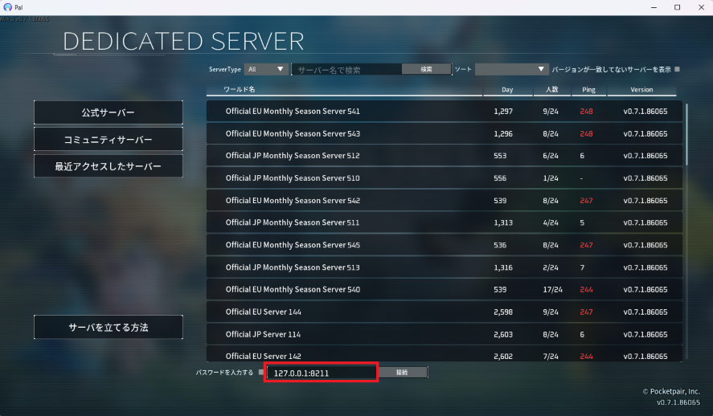

①各ゲームを起動し、サーバー接続先を指定する画面を開く（例：以下はパルワールド）
※サーバーを構築できる系のゲームは必ずIPアドレスで接続先を指定できるので、ゲーム毎に探す
②自身（みつみさん）のグローバルIPアドレスを確認する。（以下のサイト等）
※以下画像はぽちたま家のもの。みつみ家のグローバルIPは変わっていなければ「118.105.233.90」
https://www.cman.jp/network/support/go_access.cgi
③他の参加者に「グローバルIPアドレス:ポート番号」を指定して接続してもらう。
みつみさんの場合はグローバルIPに変化が無ければ「118.105.233.90:ポート番号」
例えばARKサーバーを構築した場合は「118.105.233.90:7777」を他の参加者に指定してもらう。
④みつみさん自身は「127.0.0.1:ポート番号」を指定して接続する。
 ▲ ページ上部へ戻る